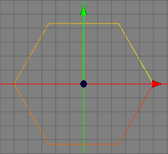
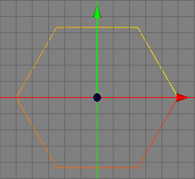

始点/終点の反転ツール
あらゆるスプラインには始点と終点があります。これらのシーケンスはスプラインの色で表されます。始点側が黄色、終点側が赤色です。
多くのクリエータツールがスプラインのシーケンスに依存しているので、これらのシーケンスを変更する場面に度々遭遇します。そのような時にこの始点/終点の反転ツールを使用します。このツールを適用するとスプラインのそれまでの始点は終点に、終点は始点にそれぞれ変更されます。以下のイメージは始点/終点の反転ツールの使用前と使用後です。
 

モード
始点/終点の反転ツールはすべてのモードで利用可能です。ただし、コントロールポイントと接線ハンドルが見えるのはポイントモードのみであることに注意してください。このスプラインツールは編集中のスプラインのみで使用可能です。


始点/終点の反転ツールを使用するにはメニューバーの "ツール→スプライン→始点/終点の反転" から呼び出します。 スプライン上に選択されているコントロールポイントのサブスプラインがすぐに反転します。コントロールポイントが何も選択されていない場合は、すべてのスプラインが反転します。したがって、このツールはポイントモードで使用することを強くお勧めします。なぜなら、このモードがどのコントロールポイントが選択中でどのスプラインが実際に反転されるのかを確認できる唯一のモードだからです。
キー
-
- なし
プロパティ
- なし